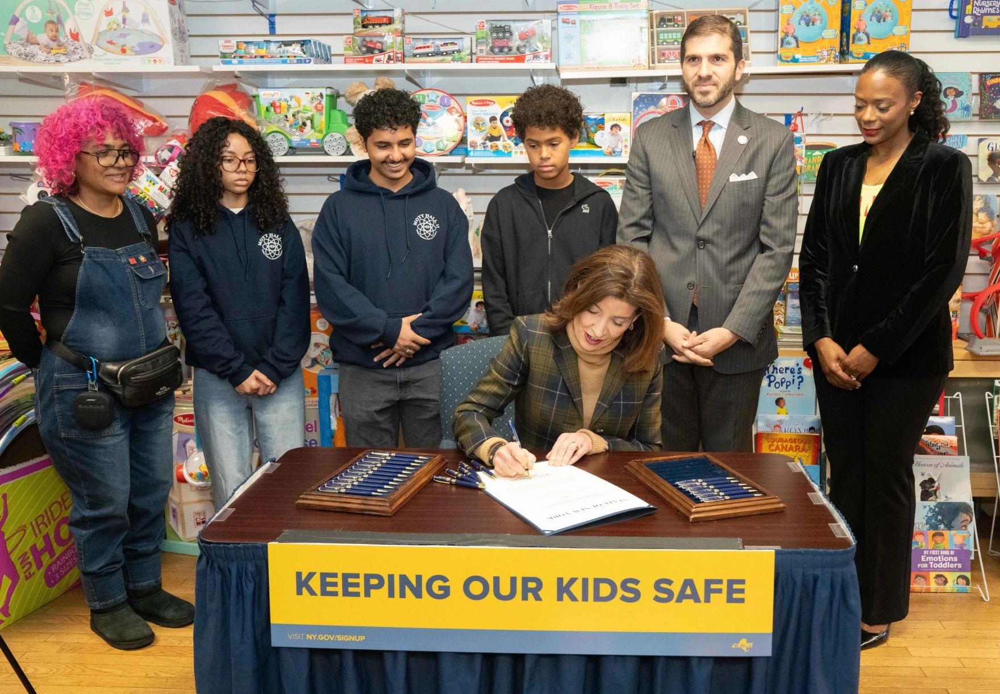

01｜
纽约禁售AI聊天玩具五年
霍楚24日在哈莱姆签署法案，暂停在纽约州制造、分销和销售内置AI聊天机器人的儿童玩具，期限五年，90天后生效。禁令涉及可联网对话的毛绒玩具、娃娃及机器人；违规制造商、卖家或运营者每项违法每日可面临1.5万美元处罚。
来源｜WAMC

观察｜
禁令尚未覆盖本轮节日购物季。家长选购时应核对联网对话、数据收集和家长控制功能。
每天5分钟，读懂纽约变化，把握城市脉动。
暂时无法播放，请再点一次重试。
霍楚24日在哈莱姆签署法案，暂停在纽约州制造、分销和销售内置AI聊天机器人的儿童玩具，期限五年，90天后生效。禁令涉及可联网对话的毛绒玩具、娃娃及机器人；违规制造商、卖家或运营者每项违法每日可面临1.5万美元处罚。
来源｜WAMC

观察｜
禁令尚未覆盖本轮节日购物季。家长选购时应核对联网对话、数据收集和家长控制功能。
纽约市出租车暨礼车管理局24日公布报告：2022年12月至今年5月，出租车及网约车平均运营成本上升16%。报告建议更频繁、小幅调整计价器运价，并研究保险合作与更透明的收费结构；本次尚未提出正式涨价方案。
来源｜amNewYork
观察｜
司机核算收入时需同时扣除租车、保险与平台费用；购车或续租前宜按净收入评估负担。
纽约市议会24日公布初步调查：今年1月至11月1日，登记纽约市地址的Kalshi个人账户净亏5250万美元，其中未满21岁用户亏890万美元。Kalshi称，年轻用户月均损失仅17.40美元，并质疑把通过有限责任公司交易的个人归入机构。
来源｜彭博社
观察｜
平台展示的获利案例难反映整体损失。家庭应把预测市场支出纳入预算，并留意年轻人的持续加码。
布鲁克林地区检察官办公室24日起诉车行老板Steven Ventura及其公司29项罪名，包括重大盗窃、欺诈及在车上非法安装警用频率扫描器。检方指其2024至2025年用无牌拖车追踪车祸，把车主引到车行维修后扣车，按每天150美元收存车费，至少12人受害。他已否认指控。
来源｜Gothamist
观察｜
车祸后应核实拖车是否持牌，签字前问清维修、存车费用和取车条件，并保留收据。

据Gothamist报道，市议会要求十大高校负责人于12月8日就校园性侵处理作证。
补充详情｜市议会24日披露，听证将涉及举报渠道、调查及处分程序，并邀请公众分享经历。新学院与Mercy大学已表示计划出席；最终负责人名单预计下周公布，听证将为后续立法提供依据。
来源｜Gothamist
快评｜
学生及家长可关注举报后的调查程序和支持服务。
据ABC7纽约报道，急救工会称人员及薪资问题正在拖慢纽约市急救响应。
补充详情｜工会称，约4000人的预算编制缺近600人，实际急救人员不足3500人。市议员庄文怡拟推动设立独立EMS部门；支持者强调专职管理，反对者担心行政重复，工会亦称薪酬差距仍需立即解决。
来源｜ABC7纽约
快评｜
制度调整仍在讨论，人员留任是急救服务的关键瓶颈。
据美联社报道，梅西百货称感恩节游行气球是否升空，将按当天风况决定。
补充详情｜24日预报称，游行上午持续风速可能达每小时15至25英里、阵风30至40英里。纽约规定，大型气球在持续风速超过23英里或阵风超过34英里时不得升空。
来源｜美联社
快评｜
观众宜为气球停飞和湿冷天气预留替代安排。
据amNewYork报道，2007年皇后区命案嫌疑人24日引渡返纽约，并在提审后被羁押。
补充详情｜检方称，遗传谱系调查及现场血迹帮助锁定47岁的Javier Segarra。他于11月4日在南卡被捕，现被控谋杀Martha Vega，动机尚未公布；下次出庭预计明年1月15日。
来源｜amNewYork
快评｜
DNA线索带来新的追诉进展，定罪仍须经法庭审理。
据CBS纽约报道，纽约州就哈莱姆大楼电梯停运14个月提出投诉。
补充详情｜州人权局24日披露，本周提出的歧视投诉要求管理方立即恢复电梯服务，并寻求罚款与员工合规培训。长期停运令残障住户及家人出行受阻，有人被迫另寻临时住所。
来源｜CBS纽约
快评｜
无障碍设施停运的代价，会直接转为住户的照护负担。
据NY1报道，纽约移民法庭每天有数十名儿童出庭，其中许多人没有律师代理。
补充详情｜儿童移民法律服务的2.5亿美元联邦资助已于7月底到期。曼哈顿290 Broadway法庭周一有一名9岁男孩在无律师情况下面对遣返程序，下月再出庭。服务机构称，儿童对出庭程序的了解明显减少；联邦主管部门未回应置评。
来源｜NY1
快评｜
有未成年人移民案件的家庭，应尽早寻求法律援助。

玩具禁令关注孩子与AI对话的风险，出租车报告追问司机辛劳后的净收入，校园听证和电梯投诉则指向服务能否真正到达有需要的人。对家庭和商户而言，政策价值要落实到生效日期、可用服务和可承担的成本，才能成为日常生活里的改善。
观察指标｜玩具禁令执行准备、出租车运价方案、校园听证与电梯恢复进度。
品牌展示 · 活动推广 · 机构宣传

评论
你今天最关注哪一条？